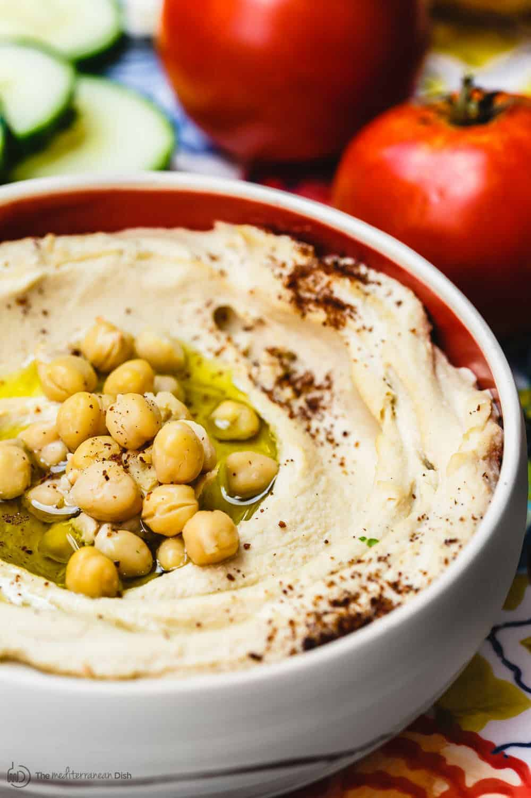

Hummus

Hummus is one of my favorite foods, so of course I'm including a recipe for it! This recipe and the image are from The Mediterranean Dish.
She describes the recipe as:
"Most everyone knows hummus. It’s the quintessential Middle Eastern dip made by blending chickpeas with tahini, garlic, and citrus.
I grew up on it, and I'm convinced that this simple beige dip is some of the best stuff on earth! Creamy, satisfying and packed with plant-based protein."
Ingredients
- 3 cups cooked chickpeas, peeled
- 1 to 2 garlic cloves, minced
- 3 to 4 ice cubes
- 1/3 cup (79 grams) tahini paste
- 1/2 tsp kosher salt
- Juice of 1 lemon
- Hot water (if needed)
- Extra virgin olive oil
- Sumac
Steps
- Add chickpeas and minced garlic to the bowl of a food processor. Puree until a smooth, powder-like mixture forms.
- While processor is running, add ice cubes, tahini, salt, and lemon juice. Blend for about 4 minutes or so. Check, and if the consistency is too thick still, run processor and slowly add a little hot water. Blend until you reach desired silky smooth consistency.
- Spread in a serving bowl and add a generous drizzle of Early Harvest EVOO. Add a few chickpeas to the middle, if you like. Sprinkle sumac on top. Enjoy with warm pita wedges and your favorite veggies.